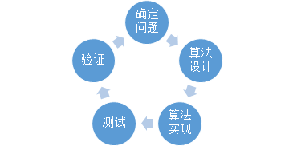

计算机与程序设计
1.根据一系列指令对数据进行处理的工具或机器 （编程语言）
2.特征：
2.1可以进行数据计算
2.2 根据指令执行任务
3.组成
3.1运算器+控制器（CPU）
3.2存储器（内存及硬盘）——>内存：临时；硬盘：永久
3.3输入设备和输出设备
4.工作过程（IPO）
4.1输入（INPUT）：程序用到的数据
4.2处理（PROCESS）：编写的程序放于存储器中用于数据处理操作
4.3输出（OUTPUT）：对处理或计算后的结果进行输出
5.程序编写步骤
